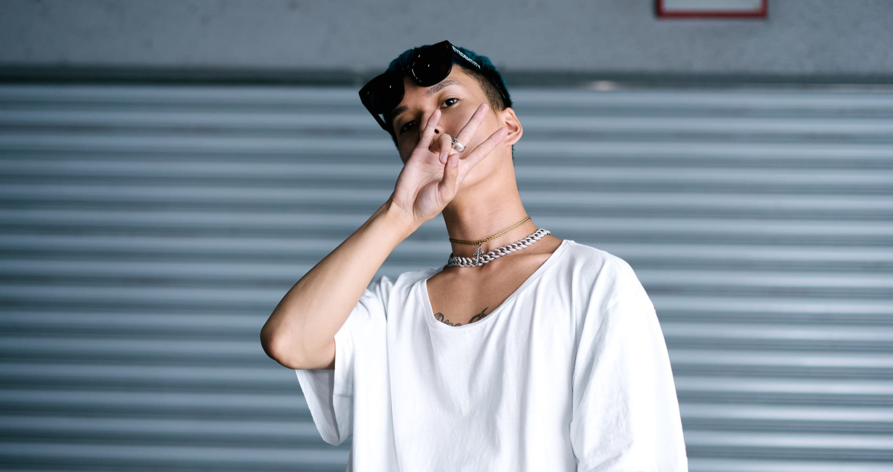

JP THE WAVY

Introduction
JP THE WAVYは、日本のラッパー、ダンサー。神奈川県湘南出身。1993年生まれ。ヒップホップクルー・D.T.R.I（Do The Right Inc.）にも所属し、過去にLil Rightという名義でも活動していた。ラップをはじめたのは中学生のころ。ヒップホップクルー・D.T.R.I（Do The Right Inc.）でデビューしているが、メンバーが7人もいることから、2016年より自分だけのプロジェクトとして新たにJP THE WAVYを名乗り、ソロ活動を開始。Discography
| 2017年08月25日 | 新作EP『WAVY TAPE』をリリース。 |
| 2018年12月1日 | 「Neo Gal Wop」をリリース。 |
| 2020年4月8日 | 『LIFE IS WAVY』数々の国内外のアーティストとの共演を経てのファースト・アルバム。 |